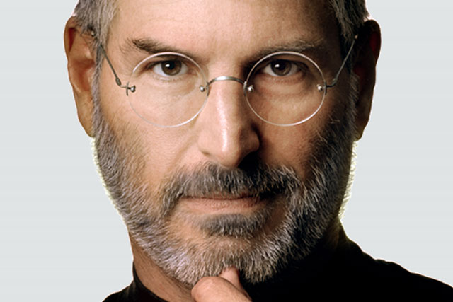
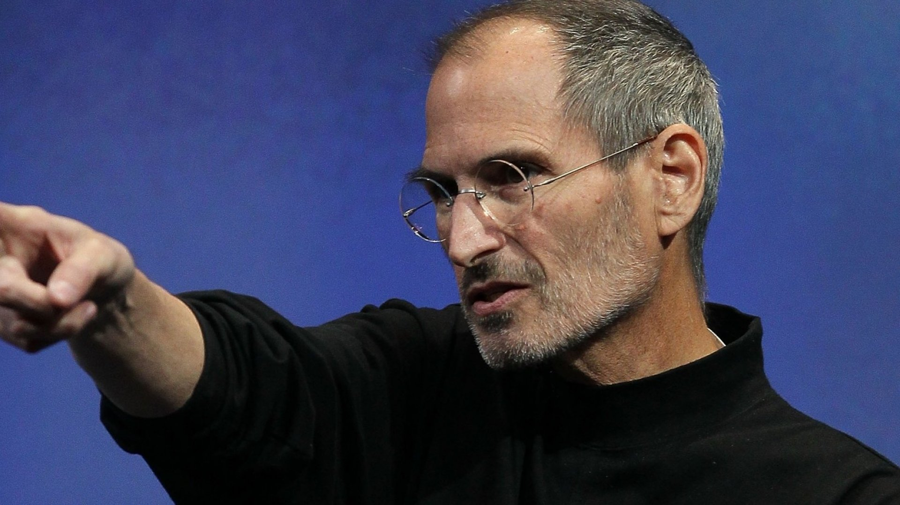
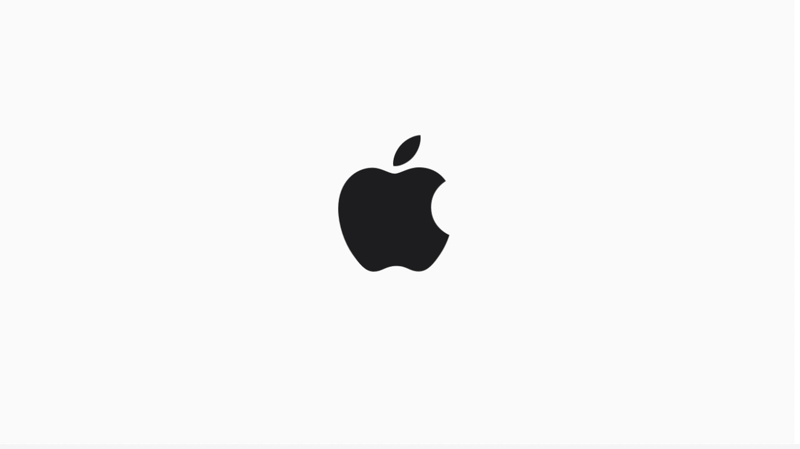
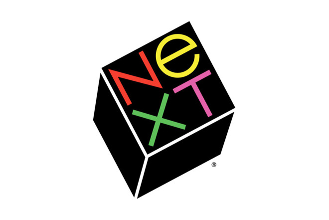
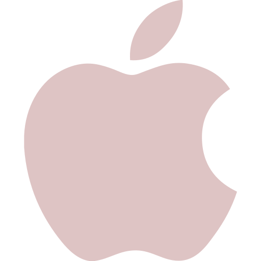
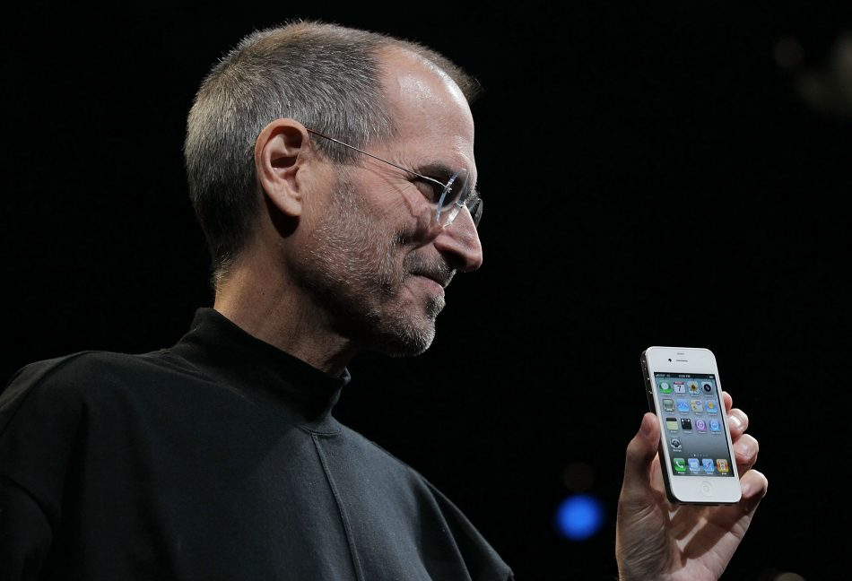
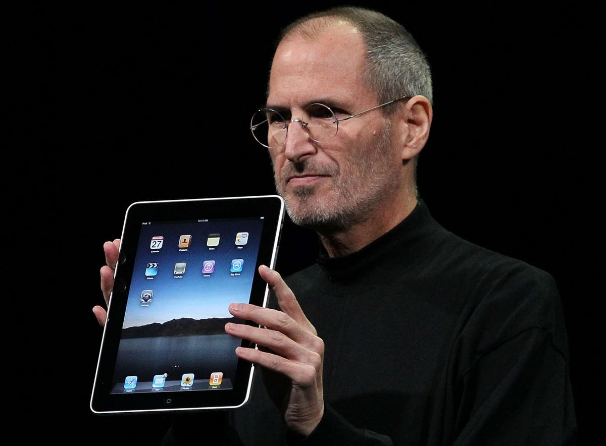
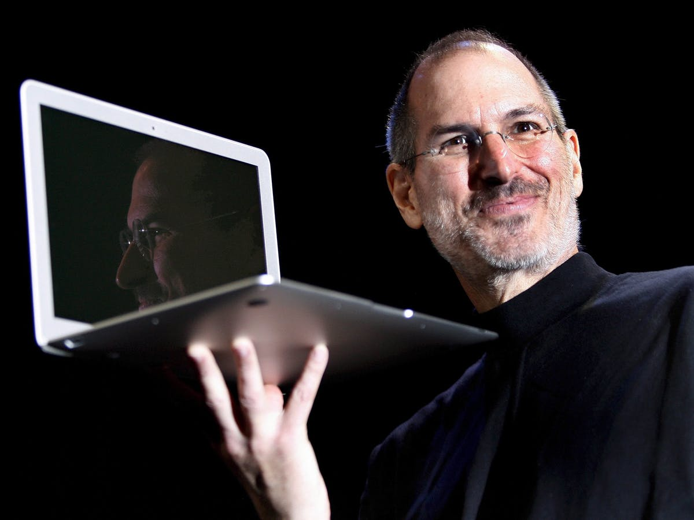

"Quality is much better than quantity.One home run is much better than two doubles"
-steve jobs
< - Click to connect APPLE made by STEVE JOBS
WHO IS STEVE JOBS

Steve Jobs co-founded Apple Computers with Steve Wozniak. Under Jobs' guidance, the company pioneered a series of revolutionary technologies, including the iPhone and iPad.Steven Paul Jobs was an American inventor, designer and entrepreneur who was the co-founder, chief executive and chairman of Apple Computer. Apple's revolutionary products, which include the iPod, iPhone and iPad, are now seen as dictating the evolution of modern technology.
EDUCATION

While Jobs was always an intelligent and innovative thinker, his youth was riddled with frustrations over formal schooling. Jobs was a prankster in elementary school due to boredom, and his fourth-grade teacher needed to bribe him to study. Jobs tested so well, however, that administrators wanted to skip him ahead to high school — a proposal that his parents declined.After high school, Jobs enrolled at Reed College in Portland, Oregon. Lacking direction, he dropped out of college after six months and spent the next 18 months dropping in on creative classes at the school. Jobs later recounted how one course in calligraphy developed his love of typography.
APPLE

In 1976, when Jobs was just 21, he and Wozniak started Apple Computer in the Jobs’ family garage. They funded their entrepreneurial venture by Jobs selling his Volkswagen bus and Wozniak selling his beloved scientific calculator. Jobs and Wozniak are credited with revolutionizing the computer industry with Apple by democratizing the technology and making machines smaller, cheaper, intuitive and accessible to everyday consumers.In 1980, Apple Computer became a publicly-traded company, with a market value of $1.2 billion by the end of its very first day of trading. Jobs looked to marketing expert John Sculley of Pepsi-Cola to take over the role of CEO for Apple.In 1997, Jobs returned to his post as Apple's CEO. Just as Jobs instigated Apple's success in the 1970s, he is credited with revitalizing the company in the 1990s.
With a new management team, altered stock options and a self-imposed annual salary of $1 a year, Jobs put Apple back on track. Jobs’ ingenious products (like the iMac), effective branding campaigns and stylish designs caught the attention of consumers once again.
NEXT

After leaving Apple in 1985, Jobs began a new hardware and software enterprise called NeXT, Inc. The company floundered in its attempts to sell its specialized operating system to mainstream America, and Apple eventually bought the company in 1996 for $429 million.As a boy, Jobs and his father worked on electronics in the family garage. Paul showed his son how to take apart and reconstruct electronics, a hobby that instilled confidence, tenacity and mechanical prowess in young Jobs.
ENDING
Jobs left the company in 1985, launching Pixar Animation Studios, then returned to Apple more than a decade later. Jobs died in 2011 following a long battle with pancreatic cancer. Jobs and Laurene Powell married on March 18, 1991. The pair met in the early 1990s at Stanford business school, where Powell was an MBA student. They lived together in Palo Alto, California, with their three children: Reed, Erin, and Eve.
Jobs also fathered a daughter, Lisa, with girlfriend Chrisann Brennan in 1978, when he was 23. He denied paternity of his daughter in court documents, claiming he was sterile.
Lisa Brennan Jobs later wrote of her childhood and relationship with Jobs in her book Small Fry, published in 2018. In 1980, Lisa wrote, DNA tests revealed that she and Jobs were a match, and he was required to begin making paternity payments to her financially struggling mother. Jobs did not initiate a relationship with his daughter until she was 7 years old. When she was a teenager, Lisa came to live with her father.

Your time is limited, so don't waste it living someone else's life.
APPLE PARK
STEVE JOBS INVENTORIES

iPhone
iPhone on Jan 9,2007.It started at $499 for a 4GB model, $599 for the 8GB vresion.It offered a 3.5-in screen, a 2MP camera.

iPad
iPad on April 3,2010.It came with 9.7-inch display, 13mm thick, weighed 680g.It has 1GHz Apple A4, 16GB,32GB capacities.

MacBook
MacBook on 2006.It came with 13-inch display, backlit keyboard along with a built-in iSight video camera.